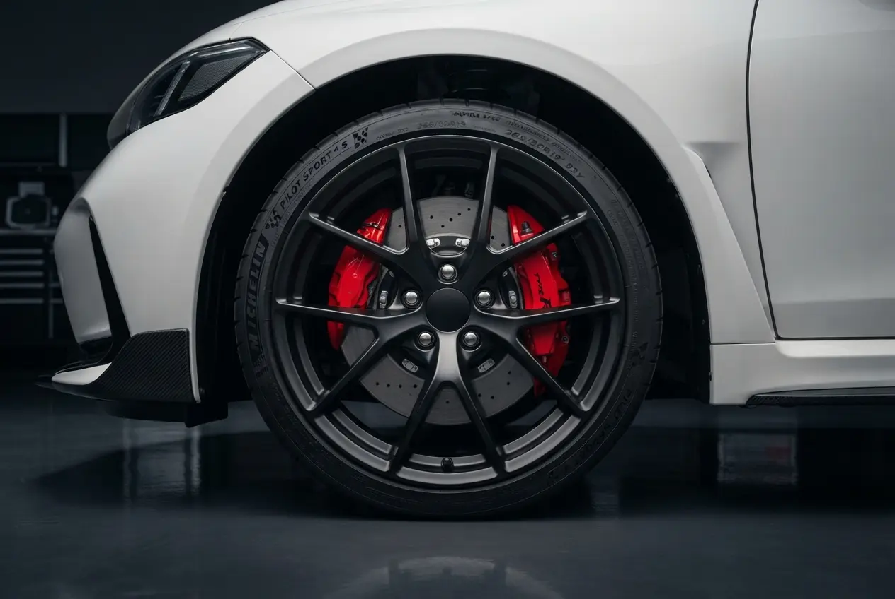

CONTROL Y CONTACTO CON EL SUELO
La potencia necesita un conjunto equilibrado
La estructura, la suspensión, los neumáticos y los frenos intervienen en la forma en que un vehículo responde. La potencia del motor es solo una parte del conjunto.
La suspensión permite el movimiento de las ruedas respecto a la carrocería y ayuda a mantener su contacto con el suelo.
La suspensión del Civic Type R
- Delantera de doble eje
- Esta configuración del Type R está diseñada para reducir la influencia del par de tracción sobre la dirección.
- Trasera multibrazo
- Emplea varios brazos para guiar el movimiento de las ruedas posteriores.
- Amortiguación adaptativa
- Permite variar electrónicamente la respuesta de los amortiguadores.
Los frenos y la temperatura
El FL5 incorpora frenos delanteros Brembo y conductos de refrigeración para el sistema de frenado.
Durante una frenada, la fricción entre pastillas y discos transforma gran parte de la energía del movimiento en calor.
En frenadas repetidas, evacuar ese calor es importante para mantener el funcionamiento del sistema. Por eso el diseño de los discos y su refrigeración forman parte del desarrollo de un deportivo.
El neumático completa el conjunto
Los neumáticos son el punto de contacto con la carretera. Su estado, presión, temperatura y las condiciones del pavimento influyen en la adherencia disponible.
Un sistema de frenos potente no elimina los límites de adherencia del neumático.
Características del modelo: documentación técnica oficial de Honda .